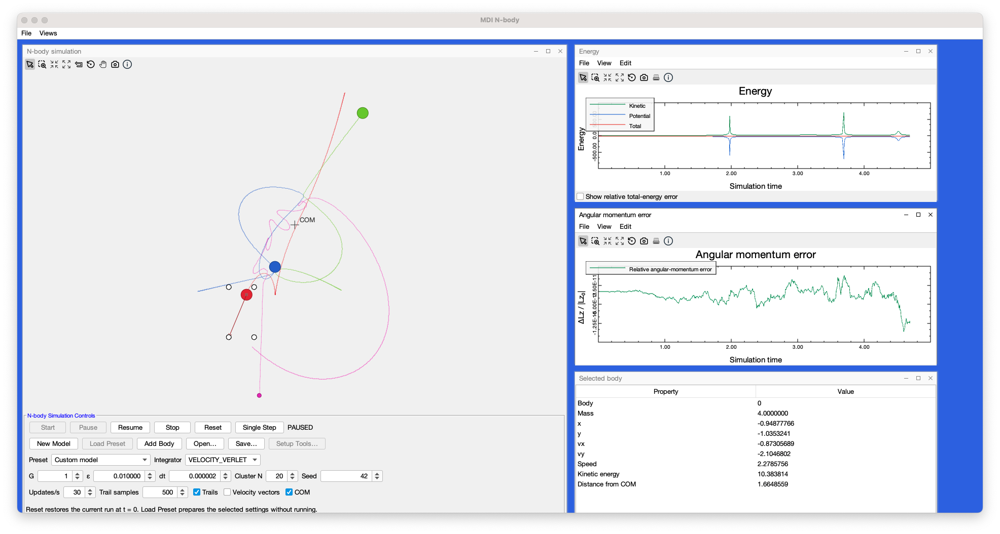

MDI Companion
MDI Companionmdi-nbody
An interactive two-dimensional N-body application showing how MDI connects a numerical simulation to editable scientific items, linked views, and live diagnostics.
What It Demonstrates
mdi-nbody builds a complete scientific application around MDI’s simulation and view architecture:
- A worker-owned gravitational model publishing immutable snapshots to Swing views
- Start, pause, resume, stop, reset, and single-step lifecycle control
- Masses represented as selectable MDI items that can be dragged, edited, or deleted while the simulation is not running
- Interactive construction of custom systems, including graphical velocity editing and versioned JSON save and open
- Linked sPlot views for energy and angular-momentum error, plus a selected-body inspector
- Reproducible presets ranging from stable two-body motion to chaotic multi-star systems
Gallery


Try It
git clone https://github.com/heddle/mdi-nbody.git
cd mdi-nbody
mvn compile exec:javaDependency
mdi-nbody requires Java 17 or newer and the core mdi framework. Install the
compatible MDI revision locally before building if it is not already available through Maven.